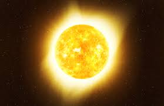

Le Soleil est une étoile de type naine jaune située au cœur de notre système solaire.
Il est composé principalement d'hydrogène et d'hélium, générant son énergie par fusion nucléaire.
Cette énergie est essentielle à la vie sur Terre et régule les conditions climatiques de notre planète.
* Type : Étoile (naine jaune)
* Distance moyenne à la Terre : ~149,6 millions de km
* Masse : 1,99×1030 kg
* Rayon : ~696 340 km
* Température de surface : ~5 500 °C
* Température au cœur : ~15 millions °C